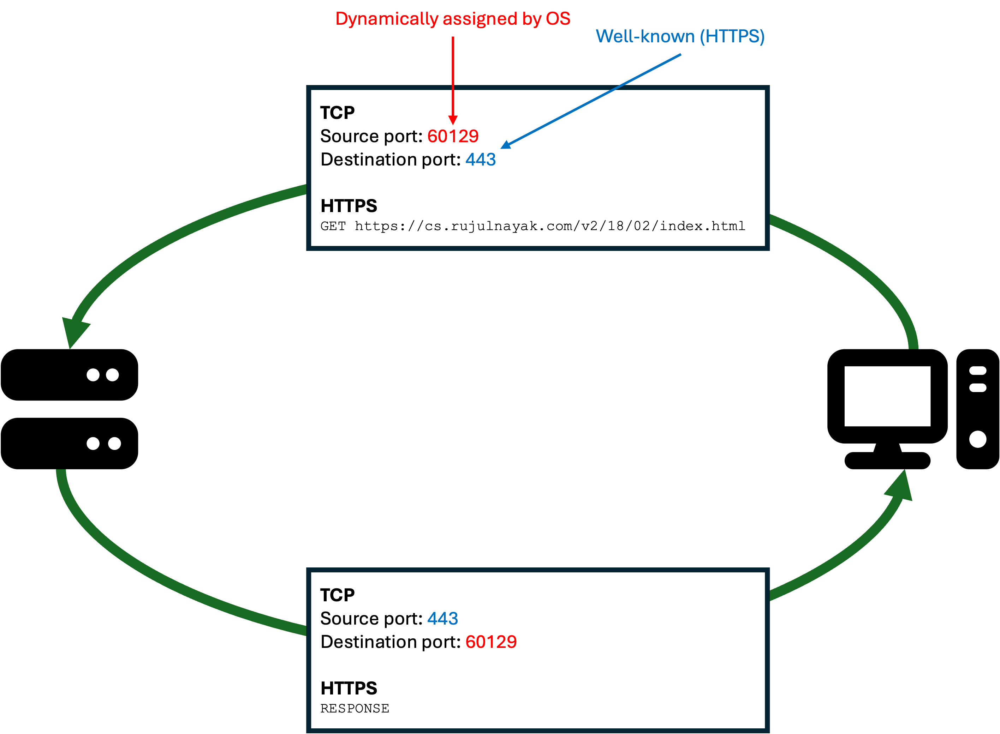
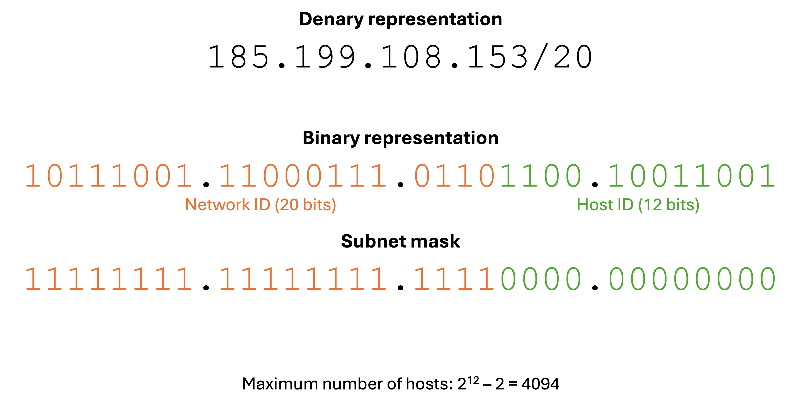
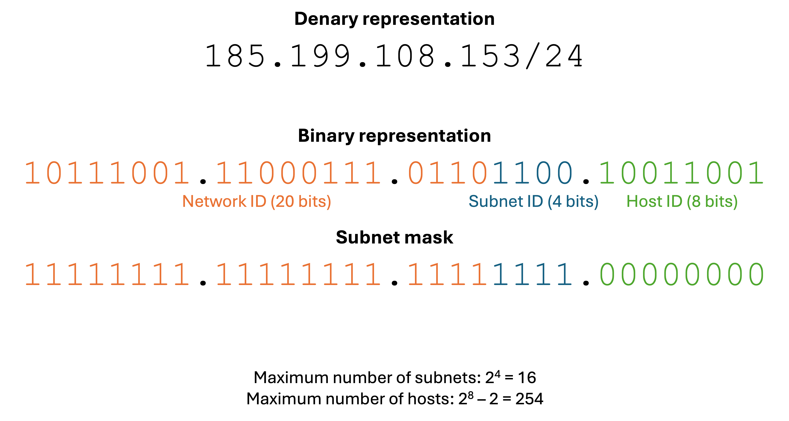

GCSE Link: None
 Port numbers identify which application or process data is meant for.
Port numbers identify which application or process data is meant for.
The allow multiple applications to use the network at the same time without confusion. The port
is often written after the IP address, with a colon before (like 192.168.1.10:80 for port
80 on IP address 192.168.1.10). The port number is 16 bits, so can be any
number from 0 to 65535. Together, the IP address and port number form a socket.
TCP and UDP will attach the source and destination port numbers in the header. When your computer receives a packet, it checks the destination port number and forwards it to the correct application.
There are three types of ports:
Diagram 1 shows an example communication between a client and web server.
 Diagram 1
Diagram 1

IP addresses consist of two parts: a network ID and host ID. Note that host IDs of all 0s
and all 1s are reserved, so the maximum number of hosts is 2h - 2 where h
is the number of bits in the host ID.
A subnet mask is used to identify the two parts of an IP address. If the network ID is n
bits, the subnet mask is n ones followed by 32 - n zeroes. The subnet mask can
be ANDed with the IP address to find the network ID. In the denary representation,
/n is appended to the end of the IP address.
Diagram 2 shows the two parts of an IP address.
 Diagram 2
Diagram 2

If the network is particularly large, we might want to split the network into further subnetworks. We can repurpose some bits from the start of the host ID to form the subnet ID. The subnet mask will include the bits of the subnet ID.
Diagram 2 shows the parts of an IP address including a subnet ID.
 Diagram 3
Diagram 3

IP addresses can be assigned either statically (you can manually enter an IP address) or dynamically (the device is leased an IP address for a fixed duration, after which it must adopt a new one). While static addresses are better for devices that need a known IP address like routers and servers, dynamic addresses can reduce IP address conflicts for other devices.
 The Dynamic Host Configuration Protocol (DHCP) is used to dynamically assign IP addresses to devices.
The Dynamic Host Configuration Protocol (DHCP) is used to dynamically assign IP addresses to devices.
The device requiring an IP address broadcasts a DHCPDISCOVER to
the network. The network's DHCP server (which is usually in the router) then responds with a
DHCPOFFER, which contains a free IP address. When the device
receives the offer, it responds with a DHCPREQUEST, asking for
that IP address. Finally, the server sends a DHCPACK
(acknowledgement) confirming that the IP address is now taken by that device.
 What network ID and host ID split would you use for a small business with up to 15 users?
What network ID and host ID split would you use for a small business with up to 15 users?
4 host ID bits allows for 14 devices, so this is not enough. The minimum number is 5 host ID bits (and so 27 network ID bits).